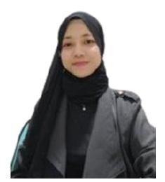

HRD | Tech & Non-Tech Recruiter | HRBP
Lulusan Sarjana Psikologi dengan pengalaman 3+ tahun di bidang HRD dan Rekrutmen end-to-end. Memiliki keahlian dalam sourcing, wawancara, onboarding, administrasi tes psikologi, dan payroll. Sangat adaptif dan berorientasi pada pemecahan masalah dengan pendekatan kreatif.
Pengalaman Kerja
Sertifikasi Profesional
Peserta Bootcamp/Webinar
PT ADI Perdana Nusantara (Jakarta, Indonesia) - Full Time
PT Mardhani Pro Health - Mardhani Clinic (Karawang, Indonesia) - Kontrak
PT NTT Indonesia Technology - NTT Ltd (Jakarta, Indonesia)
One Third Consulting & Abroad - OTCA (Yogyakarta, Indonesia)
Sarjana Psikologi (S1)
IPK: 3.40 / 4.00 🌟
Organisasi: MAPA Gunadarma (Humas) & Students Association (KMCG)
Saya terbuka untuk peluang kolaborasi baru di bidang HR, Rekrutmen, dan HRBP. Ayo terhubung!